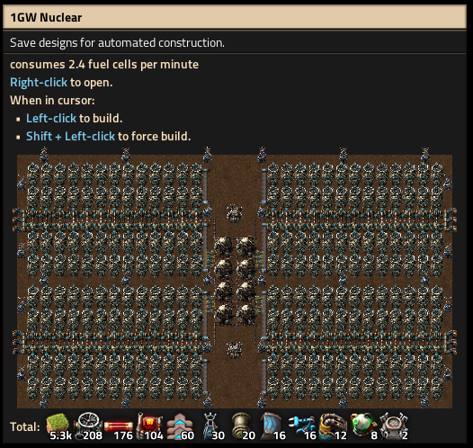
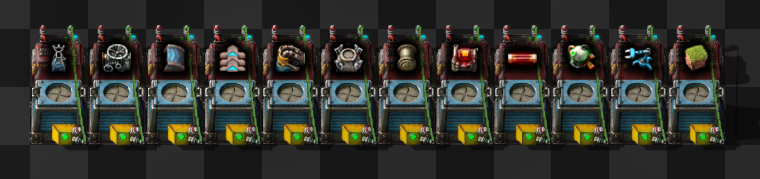
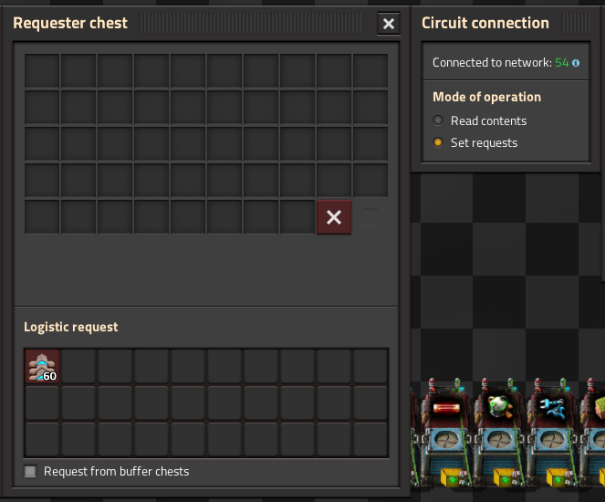

This simple script takes a factorio blueprint string and converts it to constant combinators holding the signals
of items needed to build the blueprint.
Tested with 0.16 but as long as the bp string format does not change it should work in the future as well.
Thanks to u/Tmin10
and his Factorio 0.15 blueprints decoder/encoder
(see original
post on reddit)
Please report any issues on the GitHub page: JensForstmann/Factorio-Blueprint-To-Combinator, thanks!
Scroll down for some screenshots.

🡇
Export Blueprint String and paste into Input Blueprint String
🡇
Copy Output Blueprint String and import into Factorio
🡇

🡇
